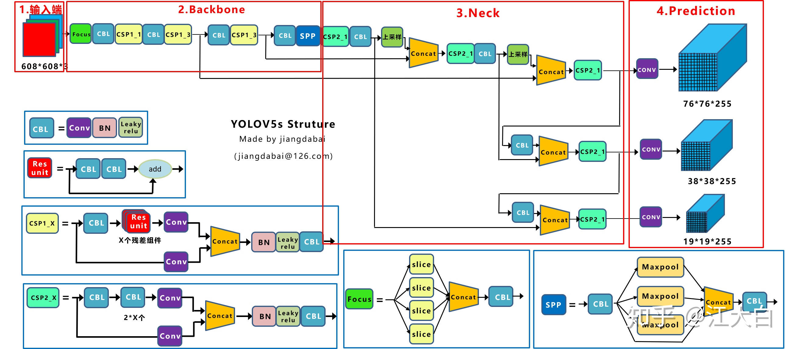

yolo_v5¶
论文地址： YOLOv5
网络模型¶

配置文件¶
参考文档 yolov5s.yaml
yolov5提供了s、m、l、x四种，所有的yaml文件都设置差不多，只有上面depth_multiple和width_multiple的设置不同， 只需要修改这两个参数就可以调整模型的网络结构。
Input¶
数据增强
参考 yolov4 的 Mosaic数据增强
自适应锚框计算
在yolov3/v4中，训练不同的数据集时，计算初始锚框的值时通过单独的程序运行的。 但yolov5每次训练时，自适的计算不同训练集中的最佳锚框值。
自适应图片缩放
在常用的目标检测算法中，不同的图片长宽都不相同，因此常用的方式是将原始图片统一缩放到一个标准尺寸，再送入检测网络中。
yolov5中对此进行了改进，对原始图像自适应的添加最少的黑边，减少信息冗余，加快推理速度。
计算缩放比例，选取小的缩放系数
计算缩放后的尺寸
计算黑边填充数值
注解
填充黑边的长度或宽度要满足32的倍数，才能符合网络的输入要求
训练时还是采用传统的填充方式，缩放到416*416，只是在测试，使用模型推理时，才采用缩减黑边的方式，提高目标检测，推理的速度
Backbone¶
Neck¶
Prediction¶
代码解析¶
参考/home/hyun/Machine_Learning/Pytorch/backup/yolov5/的注释
推理¶
选择运行环境是‘CPU’还是‘GPU’
加载网络
检查输入网络图片大小是否符合要求
根据输入是图片还是视频进行预处理
推理
后处理
输出结果